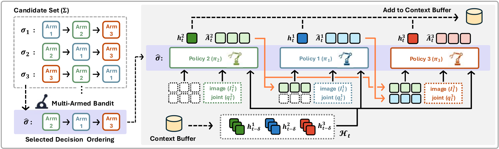
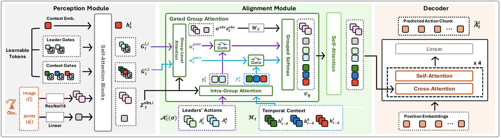

Imitation learning has shown strong performance in robotic manipulation. Extending it to multi-arm settings, however, remains challenging because coordination becomes increasingly difficult as the number of arms grows. To address this, we propose the leader-follower transformer (LF-Former), a multi-agent policy architecture that leverages an ordered decision structure for multi-arm coordination. Under a given ordering, agents predict actions sequentially, with each agent conditioned on preceding agents’ action chunks and shared temporal context that summarizes past observations across all agents. LF-Former adaptively integrates these inter-agent signals through a gated group attention mechanism. Furthermore, rather than manually fixing a decision ordering, we formulate ordering selection as a multi-armed bandit problem and identify an effective decision ordering during training. Experiments on simulated and real-world multi-arm manipulation tasks show that LF-Former consistently outperforms decentralized policies and matches or exceeds centralized baselines, especially in tightly coupled coordination scenarios.We further show that bandit-based ordering selection effectively identifies strong decision orderings, often matching or exceeding the best fixed ordering without requiring the oracle choice.
Instead of predicting the actions of multiple robot arms independently, LF-Former introduces an ordered decision structure that explicitly captures inter-agent dependencies. Given a decision ordering, an agent predicts its action chunk while conditioning on the action chunks of the agents preceding it in the sequence. This allows later agents to make their decisions with knowledge of what earlier agents intend to do, providing a structured way to coordinate tightly coupled multi-arm behaviors.

LF-Former consists of three main modules: a perception module that encodes local observations, an alignment module that integrates inter-agent information, and a decoder that predicts future action chunks.

However, not all inter-agent information is equally useful at every moment. LF-Former therefore uses gated group attention to selectively integrate the preceding agents' action chunks together with temporal context, which summarizes past observations across agents. The policy can adaptively determine how much it should rely on each source of inter-agent information according to the current situation.
The choice of decision ordering can significantly affect coordination performance. Rather than manually fixing an ordering, LF-Former treats each candidate ordering as an arm in a multi-armed bandit and uses imitation-loss feedback during training to identify an effective ordering. To account for the continuously changing policy during training, we use a discounted Thompson-sampling-based procedure that places greater emphasis on recent ordering performance.
To stabilize ordering selection, training proceeds through warm-up, search, and exploitation phases, gradually transitioning from exploration to a fixed ordering.
We provide qualitative rollouts of LF-Former across five simulated multi-arm manipulation tasks involving two to four robot arms. These examples cover diverse coordination challenges, including synchronized manipulation, handover, sequential interaction, and collision-aware multi-arm control.
We also evaluate LF-Former on two real-world dual-arm manipulation tasks, Banana Handover and Blocks-to-Bins, using two UR5 robot arms. The policies are trained from human teleoperation demonstrations, and the examples below show the resulting coordinated behaviors in the real-world setup.
@article{park2026lfformer,
title={LF-Former: A Multi-Agent Policy with Ordered Decision Structures for Multi-Arm Manipulation},
author={Park, Jeongho and Son, Hyeondal and Kwon, Hyeokjin and Cheon, Geunje and Kim, Jooyoung and Kang, Minjae and Oh, Songhwai},
journal={IEEE Robotics and Automation Letters},
year={2026},
note={Accepted}
}
}